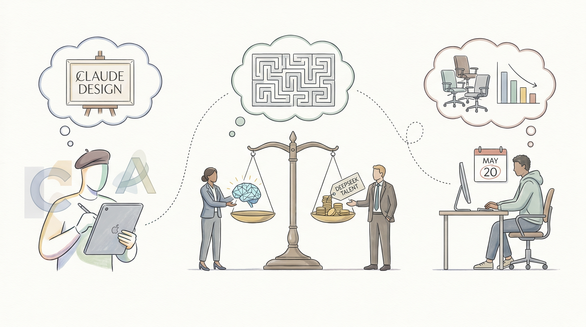

Anthropic推出Claude Design，与Figma和Canva竞争
两克伴AIGC日报
2026-04-19 星期日

本期关注：Anthropic推出Claude Design挑战Figma/Canva，DeepSeek陷人才困境与融资抉择，Meta启动8000人裁员，OpenAI高管离职；同时Claude系统提示透明化升级、Git时间线研究及硬件工具布局成焦点，反映AI行业竞争加剧与生态演进。
📰 行业动态
DeepSeek面临人才困境，国产AI硬科技初创公司受巨头压力
Meta计划5月20日启动首轮大规模裁员，约8000人受影响
DeepSeek首次融资，AI行业面临理想与商业现实的抉择
OpenAI高管Kevin Weil离职，将AI科学应用整合入Codex
🔥 今日焦点
Anthropic近期发布了Claude Opus 4.6至4.7的系统提示更新，这是AI领域的一大重要事件。Anthropic作为唯一一家公开发布其面向用户聊天系统的系统提示的顶级AI实验室，其系统提示档案可追溯至2024年7月的Claude 3版本。此次Opus 4.7的发布，标志着系统提示的又一次重要更新。
此次系统提示的更新对AI领域具有重要意义。首先，系统提示的公开有助于推动AI领域的透明度和可解释性。通过分析系统提示的演变过程，研究者可以更深入地了解AI模型的工作原理，从而促进AI技术的进步。其次，系统提示的更新有助于提高AI模型的表现。通过优化系统提示，可以提高AI模型在不同任务上的性能，从而为用户提供更好的服务。
Anthropic近期发布了Claude聊天系统的系统提示文档，并将其以Markdown格式公开。Simon Willison利用这一资源，通过Claude Code将其转换为每个模型和模型家族的独立文件，并添加了伪造的git提交日期，从而实现了通过GitHub提交视图浏览变更的历史。这一创新方法为AI领域的研究者提供了一个全新的视角，即以Git时间线的方式审视系统提示的演变。这一做法不仅有助于研究者深入了解模型的变化，而且为AI系统的可追溯性和透明度提供了新的解决方案。对于AI从业者而言，这一研究具有极高的参考价值，有助于推动AI技术的进一步发展和应用。
***
Schematik，被誉为“硬件的游标”，是一款旨在辅助用户编写物理设备代码的程序。这款软件的核心功能是通过简化编程过程，降低硬件开发门槛，让更多非专业人士也能轻松参与硬件创新。其重要性在于，它有望推动硬件开发领域的普及化，让更多人享受到科技带来的便利。
Schematik的出现对AI领域产生了深远影响。首先，它为AI硬件的开发提供了便捷的工具，使得AI设备的设计和制造更加高效。其次，Schematik的普及将促进AI技术的应用，让更多行业受益于AI技术。此外，Schematik还可能激发更多创新思维，推动AI领域的技术进步。
近日，硅谷Tech news报道，三大主流AI编程Agent——GPT-3、BERT和Jasper均曝出“评论与控制”漏洞，凭证窃取攻击已获多家厂商确认。这一安全裂痕表明，即便采用三层防御措施，仍不足以保障API密钥的安全。此次事件的核心内容是，攻击者通过精心设计的PR标题，成功窃取了API密钥，对AI领域造成了严重影响。
这一事件的重要性在于，它揭示了AI编程Agent在安全防护方面的脆弱性。在AI技术日益普及的今天，API密钥被视为企业的重要资产，一旦泄露，将可能导致严重的经济损失和声誉损害。此次事件对AI领域的影响不容忽视，它提醒了AI从业者和企业，在追求技术创新的同时，必须高度重视安全防护。
📚 深度长文
本文深入探讨了AI领域的多个热点话题。首先，作者Kiyani强调了社区智慧在AI技能分享中的重要性，提倡组织内部共享Claude Code技能，以促进团队协作和创新。其次，文章分析了lennysjobs.com关闭的原因，揭示了在线招聘平台面临的挑战和机遇。此外，作者还探讨了开设有限责任公司进行兼职工作的可行性，为读者提供了创业指导。针对中小企业，文章探讨了如何利用AI技术提升销售业绩，为中小企业提供切实可行的解决方案。最后，文章以独特的视角展望了AI技术的发展趋势，为AI从业者提供了宝贵的参考。本文内容丰富、观点独到，对AI从业者具有重要的阅读价值。
<br />
📄 重点论文
**核心贡献**: 提出了一种名为Scepsy的新系统，该系统能够高效地管理和执行由多个大型语言模型和工具组成的智能工作流程，解决了GPU资源过度订阅的问题。
**与AI Agent的关联**: 该论文与AI Agent领域紧密相关，因为它提出了一个针对复杂任务执行的高效系统，这对于理解和开发自主智能体和工具使用有重要意义。
**核心贡献**: 提出了一种新的方法论，用于研究具有规划、记忆、工具使用、持久身份和持续交互能力的智能体，强调了在智能体群体层面进行安全分析的重要性。
**与AI Agent的关联**: 该论文对于AI Agent领域的研究具有重要意义，因为它强调了智能体交互和群体行为对AI安全的影响，为智能体设计和应用提供了新的安全视角。
🛠️ 产品推荐
《Every Old Vulnerability Is Now an AI Vulnerability - Dark Reading》是一款专注于AI安全风险分析的产品。该产品揭示了AI时代下，传统应用漏洞被AI赋能后，产生自主行动能力的新风险。通过分析AI增强下的漏洞，产品帮助安全团队识别并提升AI应用中漏洞的优先级，确保安全防护措施得以有效实施。产品具备强大的AI分析能力，能够为技术从业者提供专业、简洁的风险评估解决方案。
***
Xero推出XeroOS，一款会计领域的新产品。Tieout宣布推出基于AI的员工福利计划审计自动化平台，可快速完成审计工作。MyCPE One推出AI驱动的HRMS 247解决方案，简化海外团队管理。Baseware推出AI培训计划，助力AP专业人士。TaxStatus与Advice.ai达成独家合作，为财务顾问和CPAs提供IRS数据支持。XeroOS等新产品的推出，将为会计行业带来高效、智能的解决方案，助力企业提升运营效率。
<br />